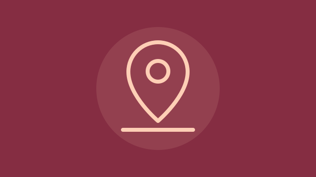

دليل خدمات المناسبات · قيد التطوير
MAHAL | محل
دليل إلكتروني يساعد منظمي المناسبات في سلطنة عُمان على العثور على الموردين حسب المحافظة ونوع الخدمة، واستعراض صور أعمالهم وتفاصيل خدماتهم، وحفظ الموردين المفضلين للرجوع إليهم أثناء التخطيط.
An online directory that helps event planners in Oman find suppliers by governorate and service category, browse their work and service details, and save favorite suppliers to revisit while planning.
- البحث حسب الموقع ونوع الخدمة
- صفحات للموردين وصور لأعمالهم
- قائمة للموردين المفضلين